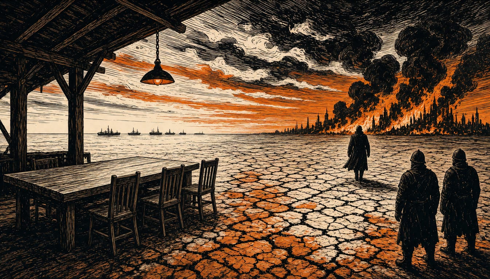

US, Russia, Ukraine in Abu Dhabi talks as Putin refuses ceasefire, Axios says
The two-day, three-way meeting starts on 10 November, with Kushner and Witkoff leading the US delegation. The Kremlin is not yet ready to have European officials in the room while the UK and France lead forces preparing to secure a peace that does not yet exist.

American, Russian and Ukrainian negotiators open peace talks in Abu Dhabi on 10 November. The American negotiators Jared Kushner and Steve Witkoff lead the United States delegation. A Russian drone strike on a train platform in the Dnipro region killed 14 people days earlier. Moscow has confirmed its delegation will attend the two-day, three-way meeting.
The Kremlin says it is not yet ready to have European officials directly involved in peace talks. Axios reports that Putin refuses to agree to a ceasefire.
The United Kingdom and France will lead Exercise Koalicja in Poland, the first major drill of the Multinational Force Ukraine, built to rehearse securing peace when the fighting ends. The British government says 300 UK troops are among the forces taking part. Turkey stands up the force's maritime element in Istanbul, testing how to clear mines so commercial shipping can return safely to Ukraine's ports. Turkish troops stay out of the Polish land exercise.
The Multinational Force Ukraine is not a NATO operation. Set up in 2025, it runs from an operational headquarters in Paris and has little American involvement, France24 reports. The UK government says the force would enter Ukraine only once fighting has ceased and at the request of Kyiv's government. It would not carry out peacekeeping or ceasefire-monitoring duties.
Washington has not left Europe out entirely. Lower-level American officials will meet France, Germany, the UK, the EU and NATO in Brussels on security guarantees, security architecture and reconstruction funding, Axios reports. The parties remain far apart, above all over territory.